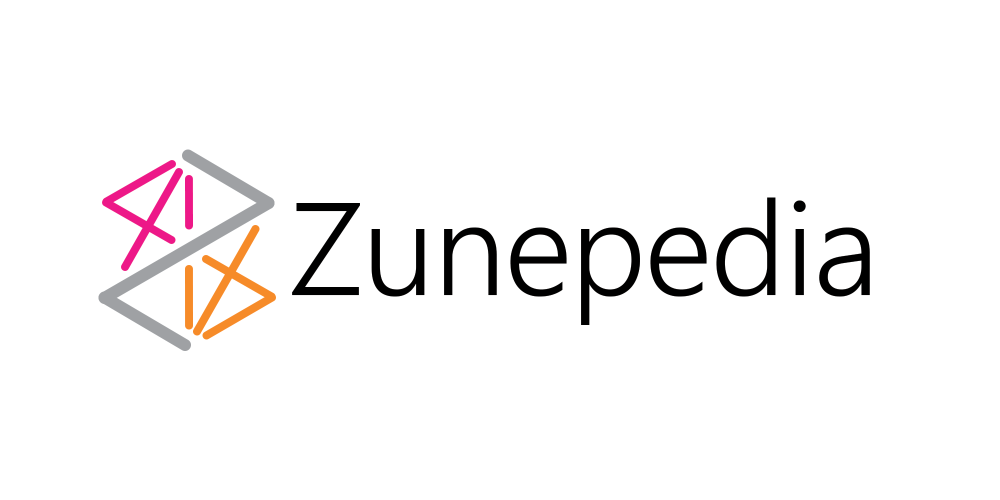
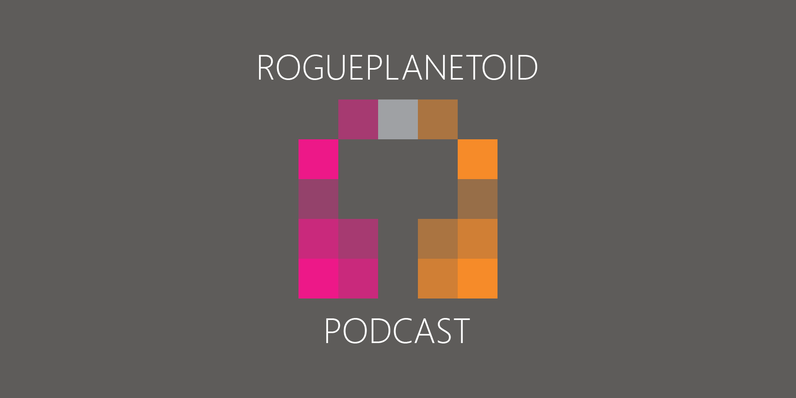

Zunepedia 2nd Anniversary
14th September 2023

Today marks the second anniversary of Zunepedia the unofficial photographic journey of the history of the Zune devices, hardware,
services and the community that keeps it alive to this day, which was released on 14th September 2021 to mark fifteen tears since Microsoft had first unveiled their plans for Zune.
Which was their vision for connected entertainment that started with the original Zune, now more famous for appearing in Guardian's of the Galaxy Vol. 3.
You can listen to the latest Episode of the RoguePlanetoid Podcast about Zunepedia which you can listen to
while reading through Zunepedia!
Zunepedia was a massive undertaking and involved taking advantage of assets that I had collected during the heyday of Zune along with some amazing contributions
from the community, without which Zunepedia would not have been possible! It is fantastic to look back over the two years since it was released, and thanks to it I appeared on
The Digital Lifestyle Show #820 - Zune Remembered - TheDigitalLifestyle.com
and helped with the feature All Over The Map: How - and why - did Microsoft 'Name That Zune'? - MyNorthwest.com
along with being featured at Relive the history of Zune with this unofficial digital coffee table book | Windows Central
when Zunepedia was released!
RoguePlanetoid Weekly Update #31
1st September 2023

Today you'll find the latest Episode of the RoguePlanetoid Podcast about
Zunepedia, which was a digital coffee table book about Zune, an
unofficial photographic journey of the history of the Zune devices, hardware, services and the community that keeps it alive to this day,
that I released back in 2021! It is amazing to think it was two years ago that I released that and to mark that with an Episode
of my Podcast about it! This week I've also been writing and putting together a talk that I will be doing in the near future about
Zune and Windows Phone so I'm really looking forward to presenting it!
This week I was at a couple of events, my regular visit to MakerSpace to get my
3D Printer working again although I still have a bit to go there. I also visited to a new event for me, Silicon Summer
part of the Silicon Mingle events that have been running in the North East recently, it was amazing to speak to everyone there and really enjoyed
hearing about what people were doing and also how we can showcase what's happening here in the North East to a wider audience as well as learning I wasn't
the only Windows Phone developer in the North East back in the day, and maybe there were probably more in the North East than any other area!
Next week I'll be still working on my presentation about Zune and Windows Phone, it is going to be a talk unlike anything I
have delivered before and will really push my skills as a speaker, along with hopefully transferring those skills to other talks I do and to not only improve
my developer talks but get into more events that many of my peers and those I look up to present at! I'm already thinking about what my next talk will be, and
it will be a developer one covering Windows App SDK as that's something I've spoken about on my own Podcast as well as on an
upcoming episode of another one for someone else that I can't wait to hear what people think when it is released next week!
Silicon Summer
1st September 2023
Silicon Summer was the latest Silicon Mingle events being held
in the North East recently and I was finally able to make it along to The Backyard Bike Shop where I was among the first couple of people
there. It was amazing to see so many people I'd never met or knew before that night and am sure many if not all will be people I will speak
to and see again as it was amazing to hear about what people were doing, whether that be having done a podcast in the past, having all the
kit and be ready to go for one - which I encouraged them to do so, a company that recently switched from PHP to C#! Along with many more
including someone who had a very similar developer experience to myself and even found out that I might not have been so alone in the
Windows Phone developer world here in in the North East that I had realised! It was great to learn so much about not only back then but
brought things right up-to-date with what people were working on and doing!
There were so many people I spoke to at Silicon Summer and was also great to hear that I'm not alone in thinking the North East
has an amazing tech community, aptly demonstrated by the dozens of people who had turned up for Silicon Summer, and was the largest non-conference
event I have been to in over half a decade! Not only that many there also believed that we don't show the rest of the country what is going on in
the North East, I've watched the North East Tech community grow over the past couple of decades and attended many of the events here in the past
and recently too that show what we are doing for people already here, but it would be great for more people to see what we are doing and am really
looking forward to seeing if something comes of going along! There are events you know will inspire and create new opportunities and it was clear
yesterday was one of those times. I'm excited of the prospects ahead for the North East Tech Community and will continue to do my bit to showcase
our amazing region and looking forward to making it to the next Silicon Mingle!
RoguePlanetoid Podcast - Episode Eight - Zunepedia
1st September 2023

Today sees the release of Episode Eight of the RoguePlanetoid Podcast
about Zunepedia. Zunepedia is an unofficial photographic journey of the
history of the Zune devices, hardware, services, and community that keeps it alive to this day. This episode also
features specially themed artwork based on Zunepedia!
You will find the Podcast where you listen to your podcasts such as Spotify,
Amazon Music, RadioPublic, Apple Podcasts, Pandora
Google Podcasts along with YouTube where you can catch up with previous episodes
and Subscribe or Follow so you don't miss any future Episodes.